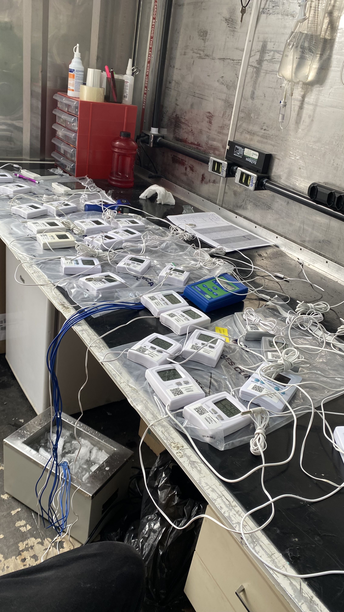
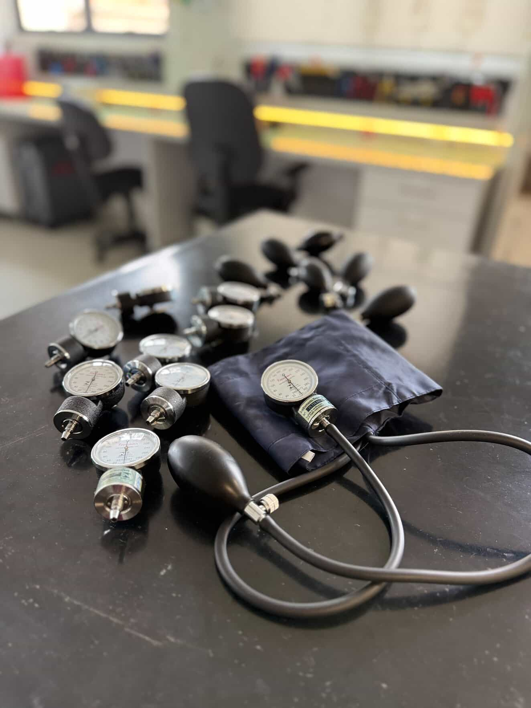
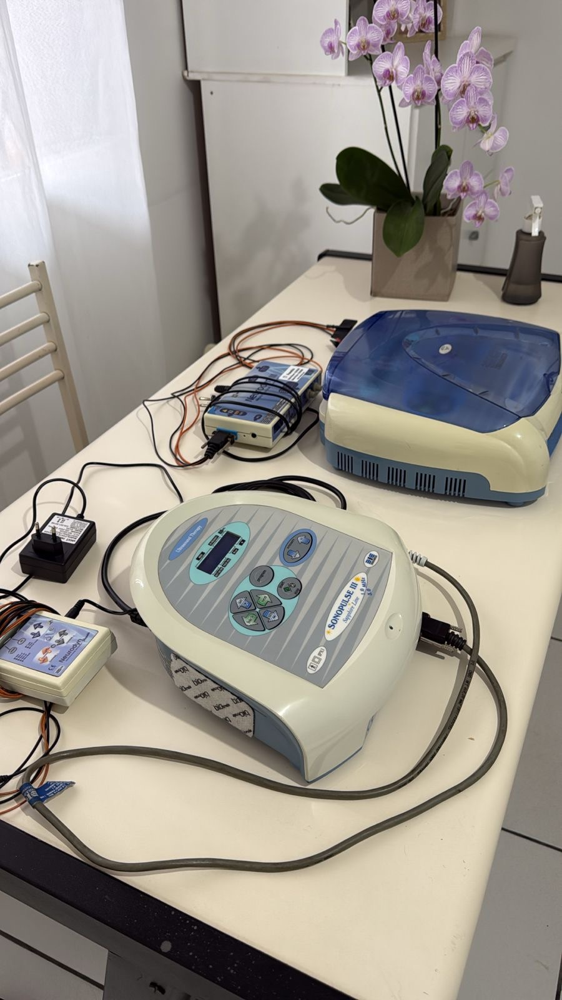
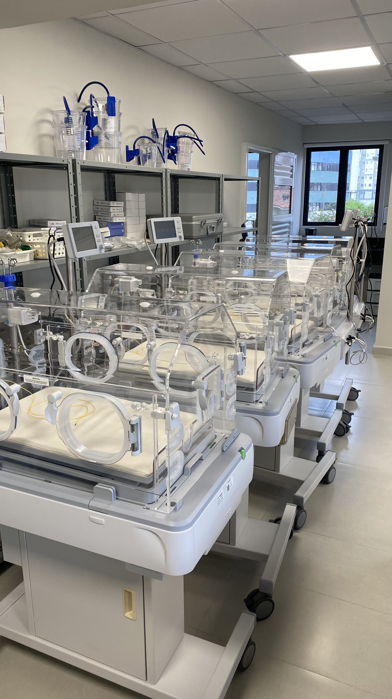
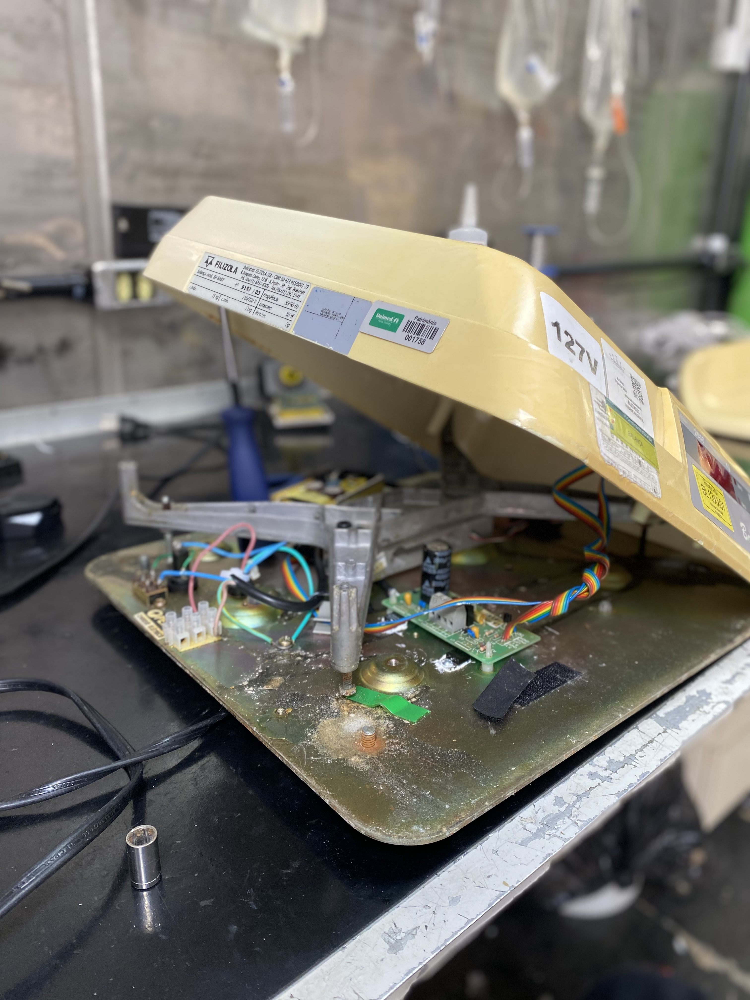
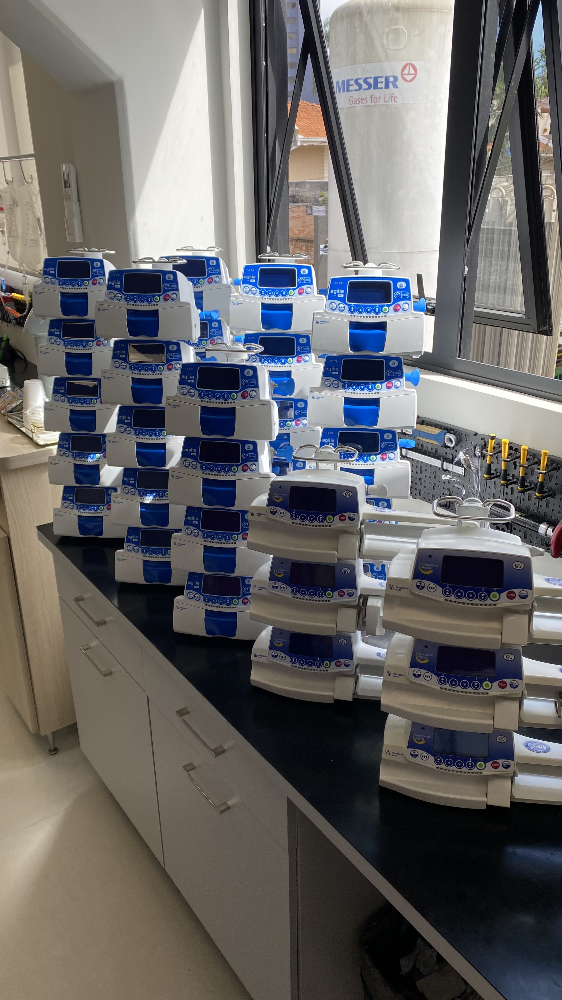

Nossos Serviços de Engenharia Clínica
A Goat Medical oferece uma gama completa de soluções para garantir a segurança, performance e conformidade dos seus equipamentos hospitalares.

Calibração de Termômetros e Termohigrômetros
Garantimos a precisão e a rastreabilidade metrológica de seus equipamentos de medição de temperatura e umidade, essenciais para ambientes críticos.
- Certificados de calibração RBC (quando aplicável)
- Equipamentos de referência de alta exatidão
- Conformidade com normas e regulamentações

Esfigmomanômetros
Essencial para o diagnóstico correto. Realizamos a calibração e manutenção para garantir que a aferição da pressão arterial seja exata e sem vazamentos.
- Calibração e Ajuste de Zero
- Teste de Vazamento
- Troca de Manguito e Pera
- Verificação da Válvula de Alívio

Laudos Técnicos
Laudos Técnicos são documentos essenciais para a segurança, legalidade e bom funcionamento dos equipamentos em clínicas de fisioterapia, estética, odontologia e saúde em geral.
- Segurança do Paciente
- Exigência Legal
- Gestão de Riscos
- Calibração e funcionalidade

Manutenção Preventiva de Aparelhos Hospitalares
Prolongue a vida útil dos seus equipamentos e previna falhas críticas com nosso programa de manutenção preventiva agendada e sistemática.
- Inspeções periódicas e ajustes
- Limpeza e lubrificação
- Substituição de peças com desgaste previsto
- Otimização de performance

Manutenção Corretiva em Equipamentos Hospitalares
Atendimento rápido e eficiente para restaurar o funcionamento de seus equipamentos com defeito, minimizando o tempo de inatividade.
- Diagnóstico preciso de falhas
- Reparo e substituição de componentes
- Testes de funcionalidade pós-reparo
- Técnicos especializados

Gestão de Parque Tecnológico
Soluções completas para o gerenciamento de todo o ciclo de vida dos seus equipamentos médico-hospitalares, da aquisição à desativação.
- Inventário e rastreabilidade
- Planejamento de manutenções
- Consultoria para aquisição de novos equipamentos
- Otimização de recursos